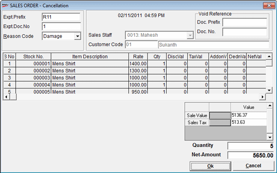

Sales orders generated earlier can be cancelled (voided) through this option. When you cancel a sales order, a void sales order record is created in the database. This void sales order cannot be recalled during billing.
The SALES ORDER window is displayed.

To delete a Sales Order, the expected transaction prefix and the expected transaction document number are to be entered, and the reason for cancellation has to be selected.
The current Shoper date is displayed, which is considered as the cancellation date of the sales order.
Expt. Prefix: Enter the prefix for the sales order to be cancelled.
Expt.Doc No.: Enter the number of the sales order to be cancelled.
Reason Code: Select the appropriate reason for voiding the sales order
Sales Staff: The code and name of the Sales Staff who cancelled the sales order is displayed
Customer Code: The code and name of the customer is displayed
The stock item details in the sales order are displayed in the grid- S No., Stock No., Item Description, Rate, Qty, DiscVal, TaxVal, AddonVal, DednVal and NetVal are displayed
Void Reference
Doc. Prefix: Enter the document prefix
Sale Value: The total sales value of the cancelled sales order transaction is displayed.
Sales Tax: The total value of the sales tax charged is displayed.
Quantity: The quantity of the cancelled sales order is displayed.
Net-Amount: The net sales value of the cancelled sales order is displayed.